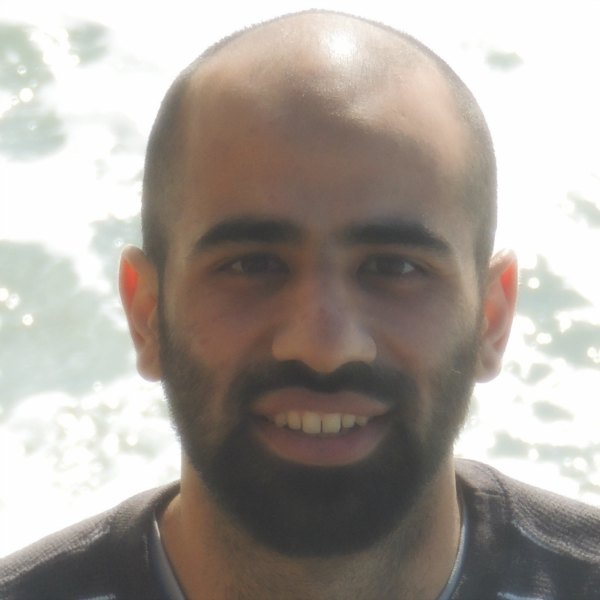
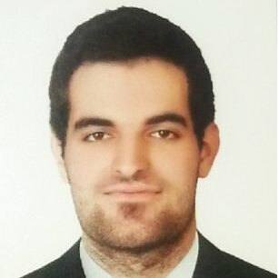
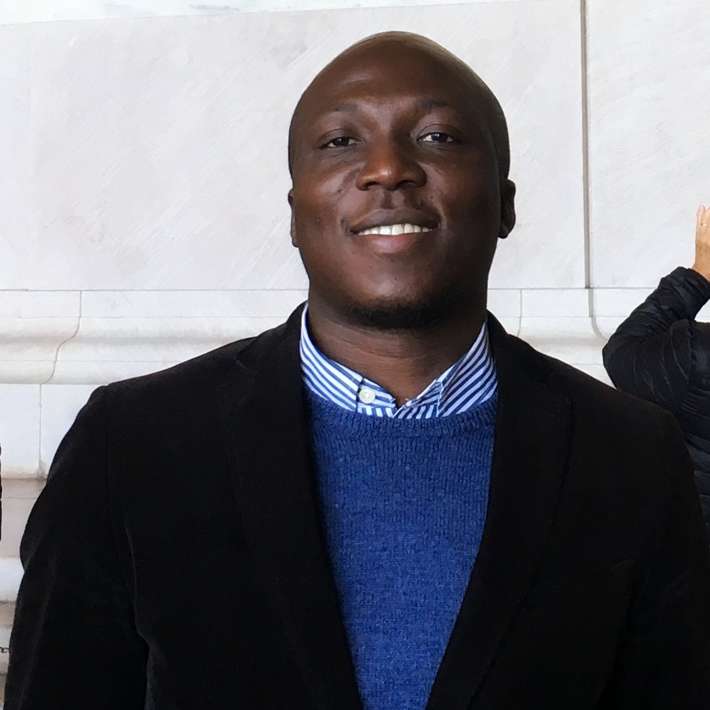
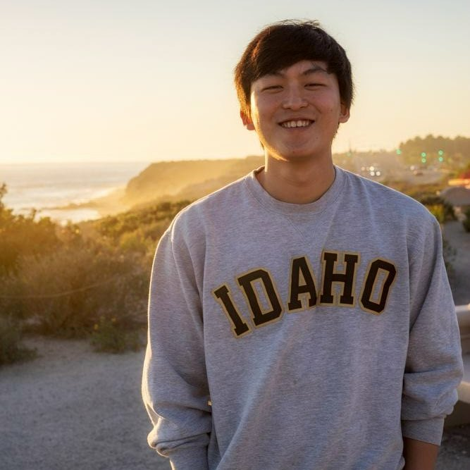
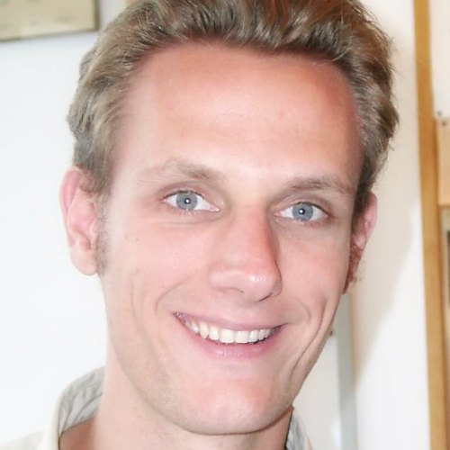
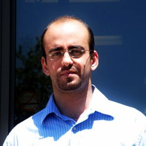
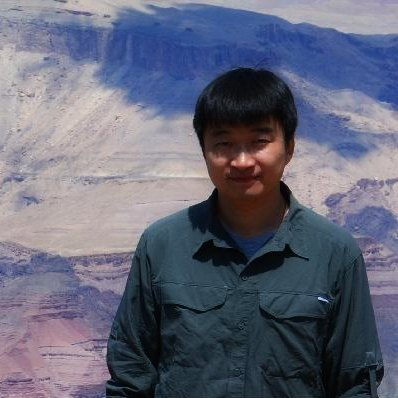
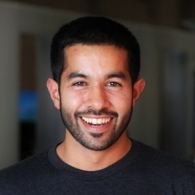
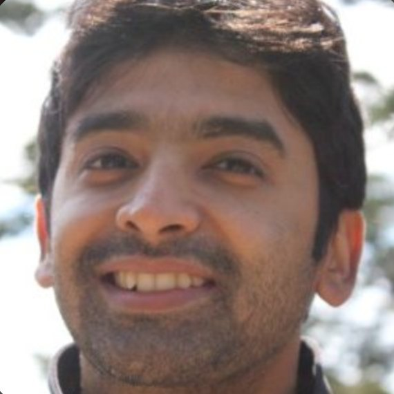

People

Andreas Molisch
Head/Founder
WiDeS

Celalettin Umit Bas
Ph.D Candidate
ULTRA-Lab Co-Manager

Daoud Burghal
Ph.D Candidate

Hussein Hammoud
Ph.D Candidate
Jorge Gomez Ponce
Ph.D Candidate
Ming Chun Lee
Ph.D Candidate
Pan Tang
Visiting Scholar
Rui Wang
Ph.D Candidate
ULTRA-Lab Co-Manager

Seun Sangodoyin
Ph.D Candidate
Sundar Aditya
Ph.D Candidate

Thomas Choi
Ph.D Candidate
Vishnu Ratnam
Ph.D Candidate

Zheda Li
Ph.D Candidate
Zihang Cheng
Ph.D Candidate
Alumni
PhD Graduates
Research Engineer
Assistant Professor
Software Engineer
Research Scientist
Hao Feng (2017)
Research Engineer
Intel
Joongheon Kim (2014)
Assistant Professor
Chung-Ang University
Junyang Shen (2013)
Software Engineer
Google
Vinod Kristem (2017)
Research Scientist
Intel Labs
Former PostDoctoral Researchers
Postdoctoral Researcher
Senior SW Specialist, DSP

Researcher
Sr. Research Scientist
Aki Karttunen
Postdoctoral Researcher
Aalto University
Jussi Salmi
Senior SW Specialist, DSP
Nokia
Olivier Renaudin
Researcher
Austria Institute of Technology
Somasundaram Niranjayan
Sr. Research Scientist
Amazon AWS
Former Visiting Researchers / Visiting PhD Students / Co-Advisees
Former Visiting PhD Graduate

Professor
Assistant Professor
Postdoctoral Researcher
Assistant Professor
Associate Professor
Associate Professor
Associate Professor
Postdoc Research Fellow
Andrea Turci
Former Visiting PhD Graduate

Assistant Professor
Arjan Meijerink
Assistant Professor
University of Twente
Fengyu Luan
Tsinghua University

Sr. Engineer
Hassan Abousaleh
Sr. Engineer
Anritsu
Jeong-Gon Kim
Professor
Korea Polytechnic University
Negin Golrezaei
Assistant Professor
Massachusetts Institute of Technology
Samira Niafar
Postdoctoral Researcher
University of Toronto
Seok-Chul Sean Kwon
Assistant Professor
California State University-Long Beach
Shengqian Han
Associate Professor
Beihang University

Associate Professor
Tingting Zhang
Associate Professor
Harbin Institute of Technology
Xue-Song Yang
Associate Professor
UESTC, China
Yafei Tian
Associate Professor
Beihang University
Zhiyuan Jiang
Postdoc Research Fellow
Tsinghua University
MS Graduates
Director of Wireless Technology
Engineer, LTE RF SW

Staff Engineer
Eric Rebeiz
Director of Wireless Technology
Tarana Wireless Inc.

Software Engineer
Harsha Kudoor
Software Engineer
Synapse Product Development
Phily Philip
Engineer, LTE RF SW
Qualcomm

Systems Design
Suraj Sreekanta
Systems Design
Broadcom